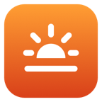

Poradnik dla Windows
Jak ustawić czerwony ekran w nocy w Windows.
Windows nie ma wbudowanego czerwonego ekranu. Światło nocne (Ustawienia → System → Ekran → Światło nocne) nawet na pełnej sile daje tylko ciepły pomarańcz, a Filtry kolorów w ułatwieniach dostępu oferują skalę szarości i odwrócone kolory, ale nie czerwień. Jeśli chcesz czystej czerwieni, bez śladu niebieskiego i zielonego, użyj aplikacji takiej jak Dozelight i włącz w jej panelu Tylko czerwień.
Zaktualizowano 29 września 2026.
Ustaw Światło nocne najcieplej, jak się da
- Otwórz Światło nocneW Windows 11 otwórz Ustawienia → System → Ekran → Światło nocne. W Windows 10 to Ustawienia → System → Ekran → Ustawienia światła nocnego.
- Włącz jeKliknij Włącz teraz albo włącz przełącznik Światło nocne.
- Pełna siłaPrzeciągnij suwak Siła do końca w prawo.
- Ustaw harmonogramWłącz Zaplanuj światło nocne i wybierz Od zachodu do wschodu słońca albo Ustaw godziny.
Jak uzyskać czerwony ekran
Na pełnej sile Światło nocne ogranicza światło niebieskie, ale zostawia mnóstwo zieleni, więc biel robi się pomarańczowa, a nie czerwona. Wbudowane Filtry kolorów (Ustawienia → Ułatwienia dostępu → Filtry kolorów) powstały z myślą o daltonizmie i czytaniu – mają skalę szarości i odwrócone kolory, ale nie mają czerwonego zabarwienia.
| Światło nocne | Filtry kolorów | Dozelight | |
|---|---|---|---|
| Najcieplej | Ciepły pomarańcz | Brak ciepłego odcienia | 1000K albo czysta czerwień |
| Tylko czerwień, bez niebieskiego i zielonego | Nie | Nie | Tak, z regulacją jasności |
| Czarne strony z czerwonym tekstem | Nie | Nie | Filtr Ciemnia |
| Harmonogram | Od zachodu do wschodu słońca albo ustalone godziny | Nie, włączasz ręcznie | Stopniowo, wokół twojej pory snu |
| Cena | Za darmo, w systemie | Za darmo, w systemie | 39,99 zł jednorazowo, 14-dniowy okres próbny |
Dozelight na Windows mieszka w zasobniku systemowym, obok zegara na pasku zadań. W jego panelu znajdziesz włącznik, suwak ciepła od 6500K do 1000K, gotowe ustawienia i tryb Tylko czerwień, który całkowicie usuwa niebieski i zielony. W trybie Auto Dozelight stopniowo ociepla ekran przez cały wieczór, po twojej porze snu przechodzi na czerwień, a przed pobudką łagodnie wraca do zwykłych barw. Gdy go używasz, wyłącz Światło nocne, żeby oba narzędzia sobie nie przeszkadzały.
Pytania
Dlaczego Światło nocne nie może zabarwić ekranu na czerwono?
Światło nocne ogranicza tylko światło niebieskie, a zieleń zostawia. Do czerwieni trzeba usunąć i niebieski, i zielony, a tego Światło nocne nie robi.
Czy czerwone światło jest lepsze w nocy?
Badania sugerują, że to niebieska część światła najsilniej wpływa na melatoninę, hormon, który pomaga zasnąć, a czerwone światło – najsłabiej. Dozelight i Światło nocne to narzędzia poprawiające komfort, a nie produkty medyczne.
Dlaczego przy włączonym HDR ekran nie zmienia koloru?
Gdy HDR jest włączony, Windows ignoruje zmiany kolorów wprowadzane przez aplikacje. Na czas korzystania z czerwonego ekranu wyłącz HDR w Ustawienia → System → Ekran.
Czy Dozelight potrzebuje uprawnień administratora?
Nie. Windows ogranicza, jak bardzo aplikacje mogą ocieplić ekran, a Dozelight może jednorazowo znieść ten limit – za zgodą administratora. Cała reszta działa bez tego.
Czy jest coś podobnego dla Maca i iPhone’a?
Tak. Zobacz, jak ustawić cieplejszy Night Shift na Macu, oraz nasz poradnik o czerwonym ekranie w nocy na iPhonie i iPadzie.

Czerwony ekran w nocy – jedno kliknięcie.
Dozelight ociepla ekran w Windows aż do blasku świecy i czystej czerwieni, zgodnie z twoją porą snu. Wypróbuj wszystkie funkcje za darmo przez 14 dni.
Zobacz Dozelight na WindowsWindows i Night Light (Światło nocne) są znakami towarowymi Microsoft Corporation. Dozelight nie jest powiązany z Microsoft.